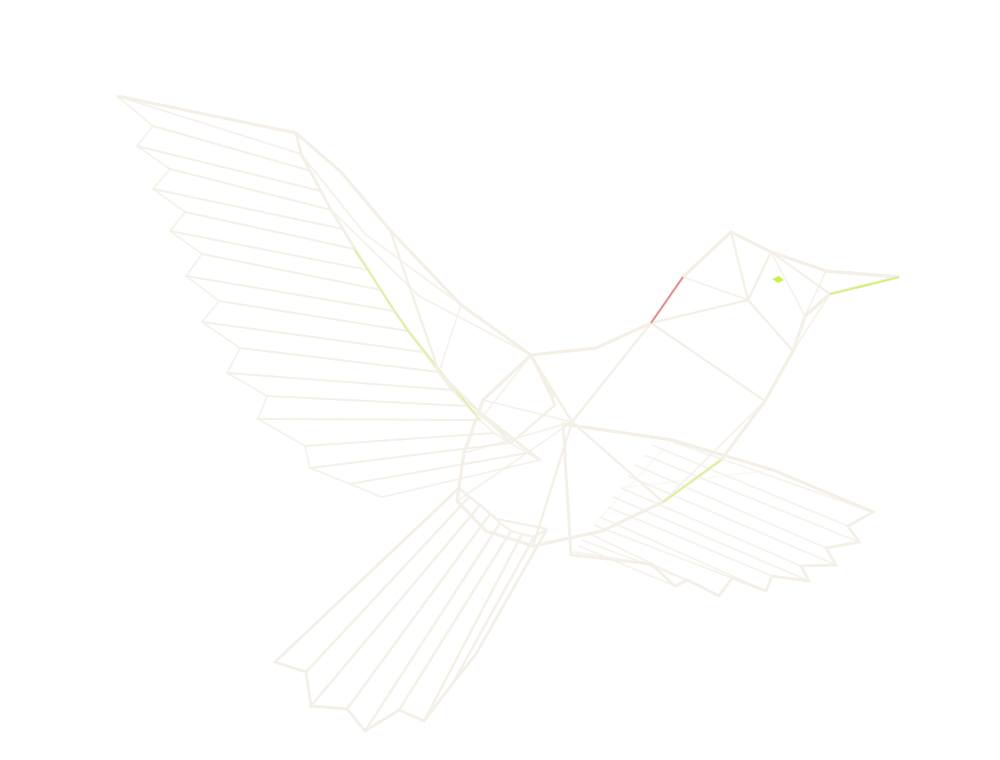

KIRMIZI / OPENING ACT
LADANIVAMoranaluem
THE OPENER
▶
KIRMIZI / OPENING ACT
LADANIVAMoranaluem
THE OPENER
▶
ISC / INTERNATIONAL SONG CONTEST
2026 — EDITION 156
THE VOTING IS OPENHOSTED BY STJOHN
ISC156
THE OFFICIAL THEMELET THE LIGHT IN.
A new dawn. A new song.
Sekiz farklı ses, tek bir sahne. ISC 156’nın sekiz yarışmacısı sahnede. Ev sahibi STJOHN, müziğin yeni döneminin kapılarını açıyor.
VOTING CLOSES IN
--DAYS
--HOURS
--MIN
--SEC
RETURN · DAWN · NEW BEGINNINGS

ISC 156STJOHN THE TURUL · THE NEW DAWN
THE CURRENT EDITION08 ENTRIES / 08 DELEGATIONSRESULTS SEALED UNTIL REVEAL
01 / THE COMPETITIONOFFICIAL · RUNNING ORDER
The songs.
The stage.
Sekiz delegasyon, sekiz ayrı müzikal dünya. KIRMIZI sahneyi açıyor; UZANMIŞIM KUMSALA geceyi zirvede kapatıyor.
DISCOVER THE EDITION
KIRMIZI / OPENING ACT
LADANIVAMoranaluem
THE OPENER
▶
 ROLIPEA
Madeline Goldstein1996 Expectations
ENTRY FILE
▶
ROLIPEA
Madeline Goldstein1996 Expectations
ENTRY FILE
▶
 CABURYA
Belén Aguileramejores momentos
ENTRY FILE
▶
CABURYA
Belén Aguileramejores momentos
ENTRY FILE
▶
 STJOHN / HOST NATION
Magnet BrainSoul Mantra
THE HOST
▶
STJOHN / HOST NATION
Magnet BrainSoul Mantra
THE HOST
▶
 VERDE VERANO
no nawork
ENTRY FILE
▶
VERDE VERANO
no nawork
ENTRY FILE
▶
 SUPERLAND
Angèle feat. Caroline Polachek & SebastiAnLove Triangle
ENTRY FILE
▶
SUPERLAND
Angèle feat. Caroline Polachek & SebastiAnLove Triangle
ENTRY FILE
▶
 GÜNEŞ DİYARI
HelinPressure
ENTRY FILE
▶
GÜNEŞ DİYARI
HelinPressure
ENTRY FILE
▶
 UZANMIŞIM KUMSALA / CLOSING ACT
Galena & AzisПо, По, По
THE FINALE
▶
UZANMIŞIM KUMSALA / CLOSING ACT
Galena & AzisПо, По, По
THE FINALE
▶
08 / 08 OFFICIAL ENTRIESALL ENTRY FILES & EDITION DETAILS
02 / LISTENTHE OFFICIAL SOUNDTRACK
Turn it up.
The sound of a new beginning, across eight songs.
ISC
156
156
03 / THE DECISIONOFFICIAL DELEGATION VOTING
VOTING IS OPEN
Your country.
Your twelve.
Delegasyonunu kalıcı voter kodunla doğrula, yedi şarkıya puan ver. Kendi entry’ne oy yok; sonuçlar resmî açıklamaya kadar gizli.
CAST YOUR VOTE OFFICIAL BALLOTS RECEIVED — / 812 · 10 · 8 · 6 · 4 · 2 · 1THE FINAL RESULT REMAINS UNDER SEAL
04 / THE HOST NATIONSTJOHN · THE RETURN OF LIGHT

THE STORY BEHIND THE LIGHT

STJOHNA long-awaited return.
“ISC 156’ya ev sahipliği yapmak, STJOHN için bir zamanlar uzaktan kurduğumuz bir hayalin kapılarını şimdi herkese açmak demek.”
Yıllarca beklenen zafer, uzaklaşılan bir yarışma ve büyük bir geri dönüş. STJOHN’un ISC 155 şampiyonluğu, bu yeni dönemin ilk ışığı oldu.
HOST NATION · WELCOME TRACKAll the Things She SaidHarrison · STJOHN's opening invitation